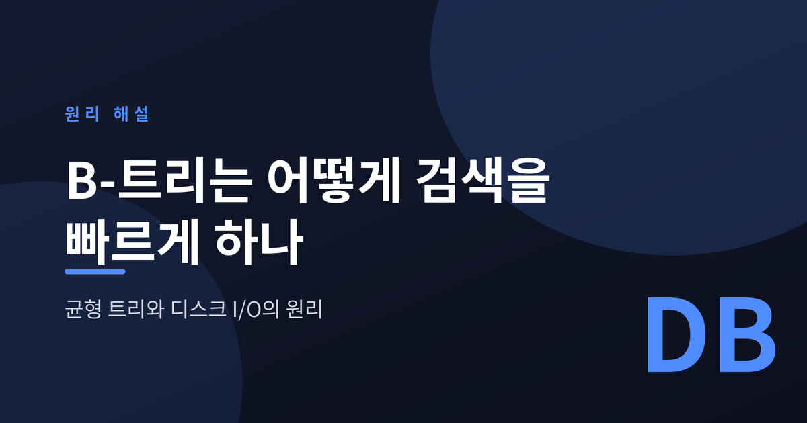
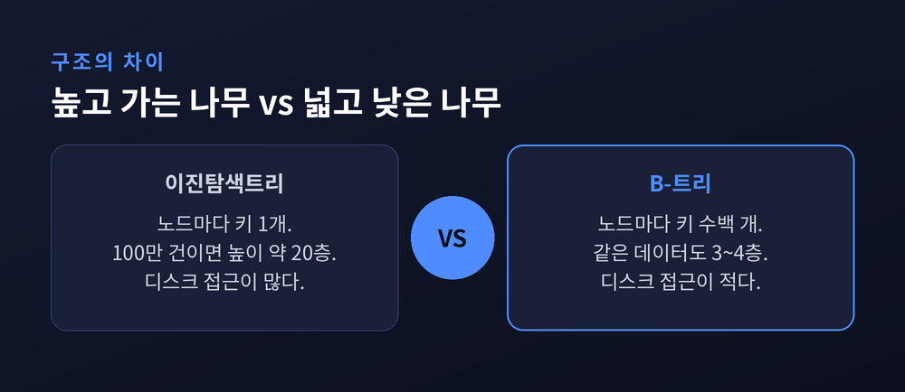
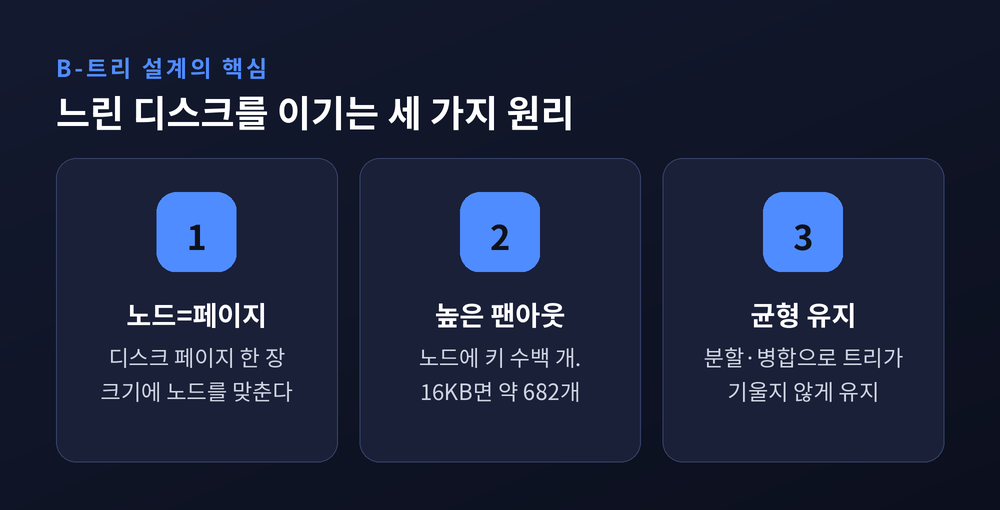
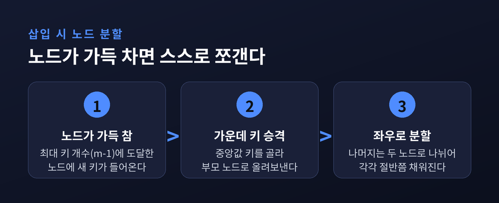
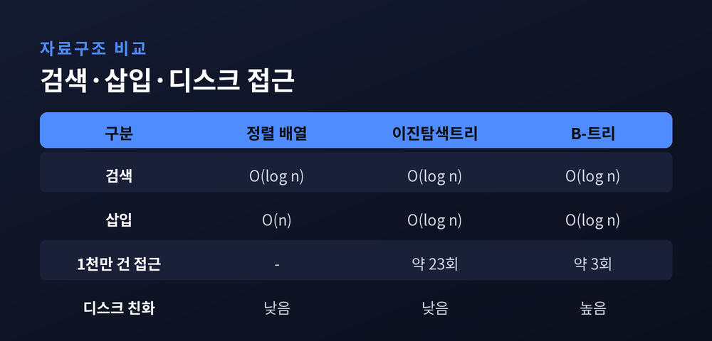

이번 글에서는 데이터베이스 인덱스의 심장인 B-트리를 정리해 보겠습니다. 수억 건의 데이터에서 원하는 한 줄을 눈 깜짝할 사이에 찾아내는 비결이 여기에 있습니다. 왜 배열이나 흔한 이진탐색트리로는 부족한지부터, B-트리와 B+트리가 디스크 위에서 어떻게 움직이는지까지 차근히 짚겠습니다.
정렬된 배열을 떠올려 봅니다. 이진 탐색을 쓰면 검색은 빠릅니다. 문제는 그다음입니다. 새 값을 중간에 끼우려면 뒤의 원소를 전부 밀어야 합니다. 이 비용이 O(n)입니다. 데이터가 쉼 없이 들어오고 지워지는 실제 테이블에는 어울리지 않습니다.
그렇다면 이진탐색트리는 어떨까요. 겉보기엔 괜찮아 보입니다. 하지만 이진탐색트리는 노드 하나에 키 한 개와 자식 포인터 두 개만 담습니다. 나무가 높고 가늘게 자랍니다. 균형 잡힌 이진트리라 해도 데이터가 100만 개면 높이가 약 20층에 이릅니다.
메모리 안이라면 포인터 스무 번 따라가는 일은 순식간입니다. 문제는 데이터베이스가 다루는 데이터가 대부분 디스크에 있다는 점입니다.
여기서 진짜 비용이 드러납니다.

디스크에서 노드 하나에 접근하는 일은 랜덤 디스크 I/O가 됩니다. 회전형 하드디스크에서 랜덤 접근 한 번은 대략 10밀리초입니다. 높이 20층 트리를 내려가느라 스무 번을 읽으면 약 200밀리초. 조회 한 번에 0.2초가 걸립니다. 사람이 기다리는 화면에서는 견디기 어려운 지연입니다.
SSD라고 크게 다르지 않습니다. 랜덤 읽기 한 번이 약 100마이크로초, 스무 번이면 약 2밀리초입니다. 이 속도로는 초당 처리할 수 있는 쿼리가 수백 건 수준에 머뭅니다.
핵심 원리는 이것입니다. 디스크는 1바이트를 읽든 한 페이지(약 4,096바이트)를 통째로 읽든 비용이 거의 같습니다. 그렇다면 답은 분명해집니다. 흩어진 키 1,000개를 1,000번 읽지 말고, 그 키들을 한 페이지에 모아 한 번에 읽으면 됩니다.
"디스크 읽기 횟수를 줄여라." 이 한 문장이 B-트리 설계의 출발점입니다.
B-트리의 B는 균형을 뜻하는 Balanced입니다. 데이터가 들어오고 나가도 트리가 한쪽으로 기울지 않고 균형을 유지합니다. 그래서 어떤 값을 찾든 성능이 고르게 나옵니다.
B-트리의 발상은 단순하고도 영리합니다. 노드 하나의 크기를 디스크 페이지 한 장 크기에 맞춥니다. 노드를 읽는 일이 곧 디스크 읽기 한 번이 되도록 맞춘 것입니다. 그리고 그 노드 안에 키를 여러 개 담습니다.
이진탐색트리가 노드마다 키 하나, 가지 둘이었다면, B-트리는 노드 하나에 수백 개의 키와 수백 개의 가지를 답니다. 이 가지 수를 팬아웃(fan-out)이라 부릅니다.
수치로 보면 놀랍습니다. 16KB 페이지에 8바이트짜리 키를 담는다고 하면, 노드 하나에 약 682개의 키와 683개의 자식 포인터가 들어갑니다. 이 팬아웃이면 단 3층짜리 트리로 3억 개가 넘는 값을 담을 수 있습니다. 683을 세 번 곱하면 3억을 넘어서기 때문입니다.

나무가 높고 가는 대신, 넓고 낮게 퍼집니다. 그래서 수백만 건이 쌓여도 서너 번의 디스크 읽기면 목표에 닿습니다.
넓고 낮은 모양은 저절로 유지되지 않습니다. 데이터가 들어오고 나갈 때마다 트리가 스스로 모양을 다잡습니다. 그 장치가 분할(split)과 병합(merge)입니다.
차수 m인 B-트리에서 노드는 최대 m-1개의 키를 담습니다. 이보다 많아지면 안 됩니다. 삽입할 때 노드가 가득 찬 상태에서 새 키가 들어오면, 노드를 둘로 쪼갭니다. 가운데 키는 부모로 올라가고, 나머지는 좌우 두 노드로 나뉩니다. 각각 절반쯤 채워진 상태가 됩니다.
삭제는 조금 더 까다롭습니다. 규칙이 삽입보다 많습니다. 키를 지워서 노드가 최소 개수 아래로 내려가면, 먼저 옆 형제 노드에서 키를 빌려옵니다. 형제도 여유가 없다면 두 노드를 하나로 합칩니다. 병합은 부모의 키가 아래로 내려오는 등 따질 것이 많아, 분할보다 손이 많이 갑니다.

이 두 동작 덕분에 B-트리는 어떤 상황에서도 균형을 잃지 않습니다.
B-트리의 검색·삽입·삭제는 모두 O(log n)입니다. 이진탐색트리도 O(log n)입니다. 그런데 실제 속도는 하늘과 땅 차이입니다. 왜일까요.
비밀은 로그의 밑에 있습니다. 이진탐색트리는 밑이 2입니다. 반면 B-트리는 밑이 팬아웃, 곧 수백입니다. 같은 로그라도 밑이 크면 값이 급격히 작아집니다.
팬아웃을 약 500이라 두면 이렇게 정리됩니다. 1,000만 건의 데이터가 약 3층 트리에 담기고, 조회에 필요한 디스크 읽기는 3회면 됩니다. 같은 데이터를 이진탐색트리로 다루면 약 23회가 필요합니다. 10억 건으로 늘려도 실제 디스크 읽기는 두세 번, 많아야 네 번에 그칩니다.

게다가 자주 쓰이는 위쪽 노드는 메모리에 캐시됩니다. 실제로 디스크까지 나가는 것은 맨 아래 리프 한 장인 경우가 많습니다. 예전 데이터베이스가 조회 하나에 수백 밀리초를 쓰던 자리에, 지금은 한 자릿수 밀리초가 들어섭니다.
실제 관계형 데이터베이스가 쓰는 것은 순수 B-트리라기보다 그 변형인 B+트리입니다.
차이는 두 가지입니다. 첫째, B+트리는 내부 노드에 길잡이 역할의 키만 두고, 실제 데이터는 오직 맨 아래 리프에만 담습니다. 내부 노드가 가벼워지니 키를 더 많이 담고, 트리는 한층 더 얕아집니다.
둘째, 리프 노드들이 정렬된 순서로 서로 사슬처럼 연결됩니다. 이 연결 덕분에 범위 검색이 빨라집니다. 예를 들어 "번호 4부터 9까지"를 찾을 때, 시작점 하나만 찾으면 옆으로 순서대로 훑어 한두 번의 읽기로 끝납니다. 리프 연결이 없다면 값 사이를 오가며 디스크를 여러 번 때려야 합니다. MySQL, PostgreSQL, SQL Server가 모두 이 방식을 택한 이유입니다.
MySQL InnoDB를 예로 들면 구조가 뚜렷합니다. 기본키로 만든 클러스터형 인덱스는 리프에 행 전체를 담습니다. 테이블 자체가 기본키 순서로 정렬되는 셈입니다. 반면 보조 인덱스의 리프에는 행 전체가 아니라 인덱스 값과 기본키만 담깁니다. 그래서 보조 인덱스로 찾으면 기본키를 얻은 뒤, 클러스터형 인덱스를 한 번 더 뒤져 나머지를 가져옵니다. InnoDB의 페이지 한 장은 16KB이고, 좁은 테이블이라면 리프 한 장에 수백 개의 행이 들어갑니다.
정리하면 이렇습니다. B-트리는 알고리즘의 화려함보다 디스크의 물리적 한계를 정직하게 마주한 설계입니다. 느린 디스크를 이기는 길은 계산을 줄이는 것이 아니라, 디스크를 덜 건드리는 것이었습니다.
그 해법이 "노드 하나에 최대한 많이 담아, 트리를 넓고 낮게 만든다"는 한 문장으로 압축됩니다.
우리가 검색창에 한 단어를 넣고 결과를 기다리는 그 짧은 순간, 수억 건의 데이터 위에서 이 조용한 나무가 서너 번의 발걸음만으로 답을 건네고 있습니다.